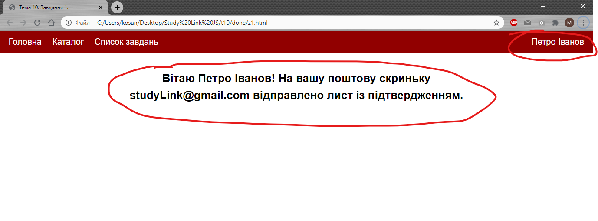

Тема 10. Завдання 1
Пункт №1
Створіть сторінку для привітання нового користувача. Розмістіть ім'я користувача з права у меню та попередьте його, що потрібно підтвердити його email. Виділені червоним блоки повинні додватись через javascript.

Пункт №2
Створіть змінну login яка має значення true якщо користувач залогінений. Якщо login має значення false. Відображайт інше повідомлення на сторінці.
Пункт №3
Через prompt запитайте користувача проль. Якщо пароль вірний відобразіть інформацю для користувача (пункт 1). Якщо ні, тоді запитайте користувача його email і виведіть таку сторінку.